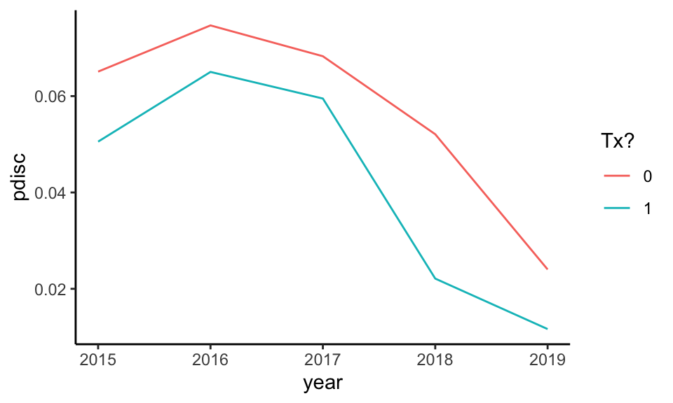
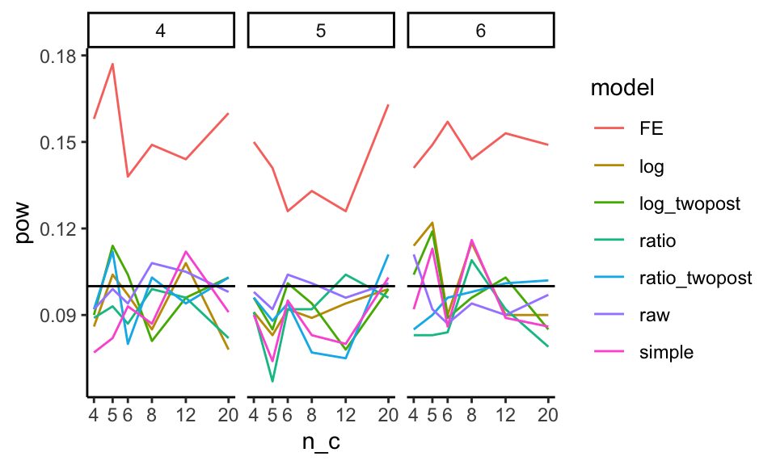
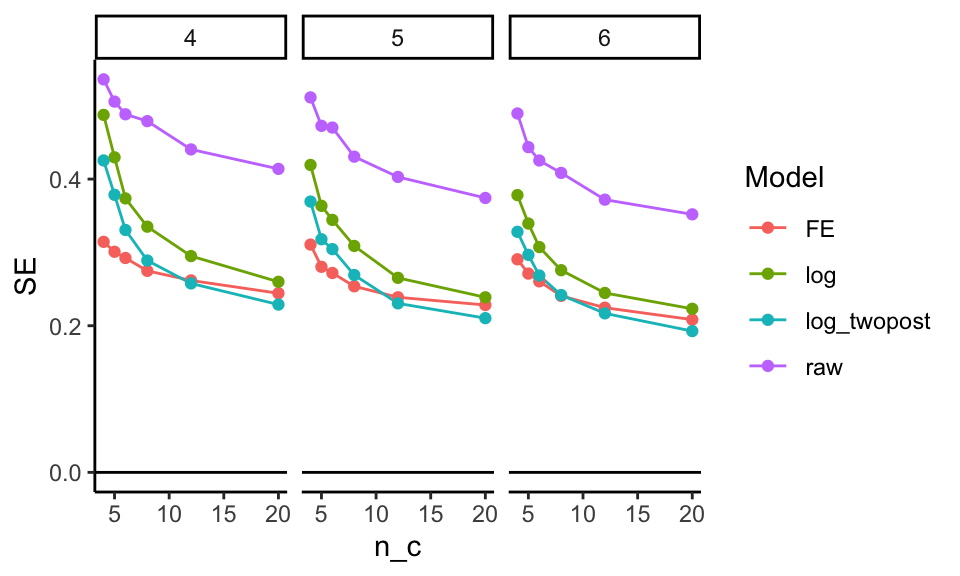
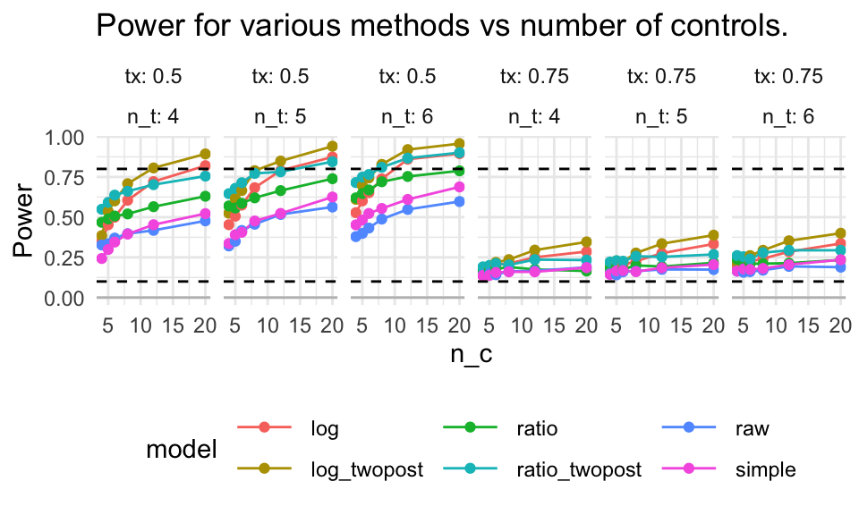
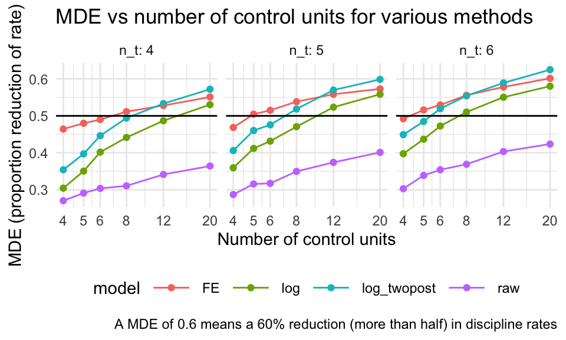

Chapter 21 Using simulation as a power calculator
We can use simulation as a power calculator. In particular, to estimate power, we generate data according to our best guess as to what we might find in a planned evaluation, and then analyze these synthetic data and see if we detect the effect we built into our DGP. We then do this repeatedly, and see how often we detect our effect. This is power.
Now, if we are generally right about our guesses about our DGP and the associated parameters we plugged into it, in terms of some planned study, then our power will be right on. This is all a power analysis is, using simulation or otherwise.
Simulation has benefits over using power calculators because we can take into account odd aspects of our modeling, and also do non-standard approaches to evaluation that we might not find in a normal power calculator.
We illustrate this idea with a case study. In this example, we are planning a school-level intervention to reduce rates of discipline via a socio-emotional targeting intervention on both teachers and students, where we have strongly predictive historic data and a time-series component. This is a planned RCT, where we will treat entire schools (so a cluster-randomized study). We are struggling because treating each school is very expensive (we have to run a large training and coaching of the staff), so each unit is a major decision. We want something like 4, 5, or maybe 6 treated schools. Our diving question is: Can we get away with this?
21.1 Getting design parameters from pilot data
We had pilot data from school administrative records (in particular discipline rates for each school and year for a series of five years), and we use those to estimate parameters to plug into our simulation. We assume our experimental sample will be on schools that have chronic issues with discipline, so we filtered our historic data to get schools we imagined to likely be in our study.
We ended up with the following data, with log-transformed discipline rates for each year (we did this to put things on a multiplicative scale, and to make our data more normal given heavy skew in the original). Each row is a potential school in the district.
## Rows: 27 Columns: 6
## ── Column specification ──────────────────────────
## Delimiter: ","
## chr (1): Code
## dbl (5): 2015, 2016, 2017, 2018, 2019
##
## ℹ Use `spec()` to retrieve the full column specification for this data.
## ℹ Specify the column types or set `show_col_types = FALSE` to quiet this message.## # A tibble: 27 × 6
## Code `2015` `2016` `2017` `2018` `2019`
## <chr> <dbl> <dbl> <dbl> <dbl> <dbl>
## 1 S1 -2.87 -2.81 -2.93 -3.52 -4.90
## 2 S2 -3.60 -2.83 -2.56 -2.76 -3.32
## 3 S3 -3.00 -2.88 -2.81 -3.39 -4.91
## 4 S4 -3.90 -3.20 -2.53 -3.67 -4.34
## 5 S5 -2.46 -2.00 -3.34 -3.66 -4.71
## 6 S6 -2.86 -2.74 -2.51 -3.21 -3.80
## 7 S7 -2.47 -2.59 -2.69 -2.15 -2.43
## 8 S8 -2.13 -1.93 -1.82 -2.21 -2.95
## 9 S9 -3.36 -3.16 -3.06 -3.26 -3.10
## 10 S10 -2.89 -2.54 -2.26 -2.89 -3.25
## # ℹ 17 more rowsWe use these to calculate a mean and covariance structure for generating data:
## 2015 2016 2017 2018 2019
## -3.076298 -2.868337 -2.931562 -3.337221 -4.011440## 2015 2016 2017 2018
## 2015 0.4191843 0.2996073 0.2282627 0.3691894
## 2016 0.2996073 0.3656335 0.2014201 0.2511376
## 2017 0.2282627 0.2014201 0.3084799 0.2927782
## 2018 0.3691894 0.2511376 0.2927782 0.5767486
## 2019 0.1921622 0.1623542 0.2541191 0.2927812
## 2019
## 2015 0.1921622
## 2016 0.1623542
## 2017 0.2541191
## 2018 0.2927812
## 2019 0.542578321.2 The data generating process
We then write a data generator that, given a desired number of control and treatment schools, and a treatment effect, makes a dataset by sampling vectors of discipline rates, and then imposes a “treatment effect” of scaling the discipline rate by the treatment coefficient for the last two years.
make_dat_param = function( n_c, n_t, tx=1 ) {
n = n_c + n_t
lpdisc = MASS::mvrnorm( n, mu = lpd_mns, Sigma = lpd_cov )
lpdisc = exp( lpdisc )
colnames( lpdisc ) = paste0( "pdisc_", colnames( lpdisc ) )
lpdisc = as.data.frame( lpdisc ) %>%
mutate( ID = 1:n(),
Z = 0 + ( sample( n ) <= n_t ) )
# Add in treatment effect
lpdisc = mutate( lpdisc,
pdisc_2018 = pdisc_2018 * ifelse( Z == 1, tx, 1 ),
pdisc_2019 = pdisc_2019 * ifelse( Z == 1, tx, 1 ) )
lpdisc %>%
relocate( ID, Z )
}Our function generates schools with discipline given by the provided mean and covariance structure; we have calibrated our data generating process to give us data that looks very similar to the data we would see in the field.
For our impact model, the treatment kicks in for the final two years, multiplying discipline rate by tx (so tx = 1 means no treatment effect).
Testing our function gives this:
## ID Z pdisc_2015 pdisc_2016 pdisc_2017
## 1 1 1 0.03118036 0.05594299 0.03283595
## 2 2 1 0.04209213 0.01716175 0.02388633
## 3 3 1 0.18736890 0.26266248 0.14379326
## 4 4 0 0.04389430 0.04571297 0.03378810
## pdisc_2018 pdisc_2019
## 1 0.01051475 0.005732411
## 2 0.01155785 0.009120705
## 3 0.04832345 0.027621311
## 4 0.01101846 0.007154335We can group each treatment arm and look at discipline over the years:
aL = a %>%
pivot_longer( pdisc_2015:pdisc_2019,
names_to = c( ".value", "year" ),
names_pattern = "(.*)_(.*)" ) %>%
mutate( year = as.numeric( year ) )
aLg = aL %>% group_by( year, Z ) %>%
summarise( pdisc = mean( pdisc ) )
ggplot( aLg, aes( year, pdisc, col=as.factor(Z) ) ) +
geom_line() +
labs( color = "Tx?" )
Our treatment group drops faster than the control. We see the nonlinear structure actually observed in our original data in terms of discipline over time has been replicated.
We next write some functions to analyze our data. This should feel very familiar: we are just doing our simulation framework, as usual.
eval_dat = function( sdat ) {
# No covariate adjustment, average change model (on log outcome)
M_raw = lm( log( pdisc_2018 ) ~ 1 + Z, data=sdat )
# Simple average change model using 2018 as outcome.
M_simple = lm( pdisc_2018 ~ 1 + Z + pdisc_2017 + pdisc_2016 + pdisc_2015,
data=sdat )
# Simple model on logged outcome
M_log = lm( log( pdisc_2018 ) ~ 1 + Z + log( pdisc_2017) + log( pdisc_2016) + log( pdisc_2015 ),
data=sdat )
# Ratio of average disc to average prior disc as outcome
sdat = mutate( sdat,
avg_disc = (pdisc_2018 + pdisc_2019)/2,
prior_disc = (pdisc_2017 + pdisc_2016 + pdisc_2015 )/3,
disc = pdisc_2018 / prior_disc,
disc_two = avg_disc / prior_disc )
M_ratio = lm( disc ~ 1 + Z, data = sdat )
M_ratio_twopost = lm( disc_two ~ 1 + Z, data = sdat )
# Use average of two post-tx time periods, averaged to reduce noise
M_twopost = lm( log( avg_disc ) ~ 1 + Z + log( pdisc_2017 ) + log( pdisc_2016 ) + log( pdisc_2015 ), data=sdat )
# Time and unit fixed effects
sdatL = pivot_longer( sdat, cols = pdisc_2015:pdisc_2019,
names_to = "year",
values_to = "pdisc" ) %>%
mutate( Z = Z * (year %in% c( "pdisc_2018", "pdisc_2019" ) ),
ID = paste0( "S", ID ) )
M_2wfe = lm( log( pdisc ) ~ 0 + ID + year + Z,
data=sdatL )
# Bundle all our models by getting the estimated treatment impact
# from each.
models <- list( raw=M_raw, simple=M_simple,
log=M_log, ratio = M_ratio,
ratio_twopost = M_ratio_twopost,
log_twopost = M_twopost,
FE = M_2wfe )
rs <- map_df( models, broom::tidy, .id="model" ) %>%
filter( term=="Z" ) %>%
dplyr::select( -term ) %>%
arrange( model )
rs
}Our method marches through a host of models; we weren’t sure what the gains would be from one model to another, so we decided to conduct power analyses on all of them. Again, we look at what our evaluation function does:
## # A tibble: 7 × 5
## model estimate std.error statistic p.value
## <chr> <dbl> <dbl> <dbl> <dbl>
## 1 FE -0.644 0.325 -1.98 0.0576
## 2 log -0.841 0.478 -1.76 0.176
## 3 log_twopost -1.22 0.437 -2.80 0.0680
## 4 ratio -0.126 0.136 -0.923 0.392
## 5 ratio_twop… -0.269 0.139 -1.93 0.102
## 6 raw -0.650 0.300 -2.17 0.0733
## 7 simple -0.00983 0.0133 -0.742 0.512We have a nice set of estimates, one for each model.
21.3 Running the simulation
Now we put it all together in our classic simulator:
sim_run = function( n_c, n_t, tx, R, seed = NULL ) {
if ( !is.null( seed ) ) {
set.seed(seed)
}
cat( "Running n_c, n_t =", n_c, n_t, "tx =", tx, "\n" )
rps = rerun( R, {
sdat = make_dat_param(n_c = n_c, n_t = n_t, tx = tx)
eval_dat( sdat )
})
bind_rows( rps )
}We then do the usual to run across a set of scenarios, running sim_run on each row of the following:
res = expand_grid( tx = c( 1, 0.75, 0.5 ),
n_c = c( 4, 5, 6, 8, 12, 20 ),
n_t = c( 4, 5, 6 ) )
res$R = 1000
res$seed = 1010203 + 1:nrow(res)For evaluation, we load our saved results and calculate rejection rates (we use an alpha of 0.10 since we are doing one-sided testing):
res = readRDS( file="data/discipline_simulation.rds" )
sres <- res %>% group_by( n_c, n_t, tx, model ) %>%
summarise( E_est = mean( estimate ),
SE = sd( estimate ),
E_SE_hat = mean( std.error ),
pow = mean( p.value <= 0.10 ) ) # one-sided testing
sres## # A tibble: 378 × 8
## # Groups: n_c, n_t, tx [54]
## n_c n_t tx model E_est SE E_SE_hat
## <dbl> <dbl> <dbl> <chr> <dbl> <dbl> <dbl>
## 1 4 4 0.5 FE -0.693 0.313 0.277
## 2 4 4 0.5 log -0.694 0.476 0.430
## 3 4 4 0.5 log_… -0.692 0.431 0.383
## 4 4 4 0.5 ratio -0.374 0.219 0.203
## 5 4 4 0.5 rati… -0.291 0.151 0.139
## 6 4 4 0.5 raw -0.719 0.535 0.515
## 7 4 4 0.5 simp… -0.0195 0.0194 0.0157
## 8 4 4 0.75 FE -0.292 0.310 0.274
## 9 4 4 0.75 log -0.295 0.488 0.435
## 10 4 4 0.75 log_… -0.305 0.424 0.373
## # ℹ 368 more rows
## # ℹ 1 more variable: pow <dbl>21.4 Evaluating power
Once our simulation is run, we can explore power as a function of the design characteristics. In particular, we eventually want to calculate the chance of noticing effects of different sizes, given various sample sizes we might employ. Our driving question is how few schools on the treated side can we get away with? Also, we want to know how much having more schools on the control side allows us to get away with fewer schools on the treated side.
21.4.1 Checking validity of our models
Before we look at power, we need to check on whether our different models are valid.
This is especiallt important as we are in a small \(n\) context, so we know asymptotics may not hold as they should.
To check our models for validity we subset our trials to where tx = 1, and look at the rejection rates.
We first run a regression to see if rejection is a function of sample size (are smaller samples more invalid) and treatment-control imbalance. We center both variables so our intercepts are overall average rejection rates for each model considered:
sres = mutate( sres,
n = n_c + n_t,
imbalance = pmax( n_t / n_c, n_c / n_t ) - 1 )
sres$n = (sres$n - mean(sres$n)) / sd(sres$n)
mod = lm( pow ~ 0 + (n + imbalance) * model - n - imbalance,
data = filter( sres, tx == 1 ) )
broom::tidy(mod) %>%
knitr::kable( digits = 3)| term | estimate | std.error | statistic | p.value |
|---|---|---|---|---|
| modelFE | 0.143 | 0.006 | 24.593 | 0.000 |
| modellog | 0.099 | 0.006 | 16.999 | 0.000 |
| modellog_twopost | 0.093 | 0.006 | 15.939 | 0.000 |
| modelratio | 0.090 | 0.006 | 15.437 | 0.000 |
| modelratio_twopost | 0.093 | 0.006 | 15.967 | 0.000 |
| modelraw | 0.092 | 0.006 | 15.751 | 0.000 |
| modelsimple | 0.091 | 0.006 | 15.571 | 0.000 |
| n:modelFE | -0.003 | 0.006 | -0.459 | 0.647 |
| n:modellog | 0.001 | 0.006 | 0.141 | 0.888 |
| n:modellog_twopost | -0.005 | 0.006 | -0.919 | 0.360 |
| n:modelratio | 0.000 | 0.006 | 0.071 | 0.944 |
| n:modelratio_twopost | 0.002 | 0.006 | 0.414 | 0.680 |
| n:modelraw | -0.006 | 0.006 | -1.008 | 0.316 |
| n:modelsimple | 0.001 | 0.006 | 0.191 | 0.849 |
| imbalance:modelFE | 0.005 | 0.005 | 0.857 | 0.394 |
| imbalance:modellog | -0.003 | 0.005 | -0.587 | 0.558 |
| imbalance:modellog_twopost | 0.004 | 0.005 | 0.708 | 0.480 |
| imbalance:modelratio | 0.000 | 0.005 | -0.001 | 0.999 |
| imbalance:modelratio_twopost | 0.001 | 0.005 | 0.249 | 0.804 |
| imbalance:modelraw | 0.006 | 0.005 | 1.154 | 0.251 |
| imbalance:modelsimple | 0.001 | 0.005 | 0.180 | 0.858 |
We can also plot the nominal rejection rates under the null:
sres %>% filter( tx == 1 ) %>%
ggplot( aes( n_c, pow, col=model ) ) +
facet_wrap( ~ n_t, nrow=1 ) +
geom_line() +
geom_hline( yintercept = 0.10 ) +
scale_x_log10(breaks=unique(sres$n_c) )
We see the fixed effect models have elevated rates of rejection. Interestingly, these rates do not seem particularly dependent on sample size or treatment-control imbalance (note lack of significant coefficeints on our regression model). The other models all appear valid.
We can also check for bias of our methods:
sres %>% group_by( model, tx ) %>%
summarise( E_est = mean( E_est ) ) %>%
pivot_wider( names_from="tx", values_from="E_est" )## # A tibble: 7 × 4
## # Groups: model [7]
## model `0.5` `0.75` `1`
## <chr> <dbl> <dbl> <dbl>
## 1 FE -0.692 -0.290 -0.000703
## 2 log -0.692 -0.288 0.00120
## 3 log_twopost -0.692 -0.291 0.00241
## 4 ratio -0.372 -0.187 -0.000937
## 5 ratio_twopost -0.289 -0.145 -0.00108
## 6 raw -0.694 -0.290 0.00327
## 7 simple -0.0206 -0.0104 0.0000998We see our models are estimating different things, none of which are the treatment effect as we parameterized it. In particular, “FE,” “log,” “raw,” and “log_twopost” are all estimating the impact on the log scale. Note that \(log( 0.5 ) \approx -0.69\) and \(log( 0.75 ) \approx -0.29\). Our “simple” estimator is estimating the impact on the absolute scale; reducing discipline rates by 50% corresponds to about a 2% reduction in actual cases. Finally, “ratio” and “ratio_twopost” are estimating the change in the average ratio of post-policy discipline to pre; they are akin to a gain score as compared to the log regressions.
21.4.2 Assessing Precision (SE)
Now, which methods are the most precise? We look at the true standard errors across our methods (we drop “simple” and the “ratio” estimators since they are not on the ratio scale):
sres %>%
group_by( model, n_c, n_t ) %>%
summarise( SE = mean(SE ) ) %>%
filter( !(model %in% c( "simple", "ratio", "ratio_twopost" ) ) ) %>%
ggplot( aes( n_c, SE, col=model )) +
facet_grid( . ~ n_t ) +
geom_line() + geom_point() +
geom_hline( yintercept = 0 ) +
labs( colour = "Model" )
It looks like averaging two years for the outcome is helpful, and bumps up precision. The two way fixed effects model seems to react to the number of control units differently than the other estimators; it is way more precise when the number of controls is few, but the other estimators catch up. The “raw” estimator gives a baseline of no covariate adjustment; everything is substantially more precise than it. The covariates matter a lot.
21.4.3 Assessing power
We next look at power over our explored contexts, for the models that we find to be valid (i.e., not FE).
sres %>%
filter( model != "FE",tx != 1 ) %>%
ggplot( aes( n_c, pow, col=model )) +
facet_grid( . ~ tx + n_t, labeller = label_both ) +
geom_line() + geom_point() +
geom_hline( yintercept = 0, col="grey" ) +
geom_hline( yintercept = c( 0.10, 0.80 ), lty=2 ) +
theme_minimal()+ theme( legend.position="bottom",
legend.direction="horizontal",
legend.key.width=unit(1,"cm"),
panel.border = element_blank() ) +
labs( title="Power for various methods vs number of controls.",
y = "Power" )
We mark 80% power with a dashed line. For a 25% reduction in discipline, nothing reaches desired levels of power. For 50% reduction, some designs do, but we need substantial numbers of control schools. Averaging two years of outcomes post-treatment seems important: the “twopost” methods have a distinct power bump. For a single year of outcome data, the log model seems our best bet.
21.4.4 Assessing Minimum Detectable Effects
Sometimes we want to know, given a design, what size effect we might be able to detect. The usual measure for this is the Minimum Detectable Effect (MDE), which is usually the size of the smallest effect we could detect with power 80%.
To calculate Minimal Detectable Effects (MDEs) for the log-scale estimators, we first average our SEs over our different designs, grouped by sample size, and then convert the SEs to MDEs by multiplying by 2.8. We then have to convert to our treatment scale by flipping the sign and exponentiating, to get out of the log scale.
sres2 = sres %>%
group_by( model, n_c, n_t ) %>%
summarise( SE = mean( SE ),
E_SE_hat = mean( E_SE_hat ) ) %>%
mutate( MDE = exp( - (1.64 + 0.8) * SE ) )
sres2 %>%
filter( !(model %in% c( "simple", "ratio", "ratio_twopost" ) ) ) %>%
ggplot( aes( n_c, MDE, col=model ) ) +
facet_wrap( ~ n_t, labeller = label_both ) +
geom_point() + geom_line() +
geom_hline( yintercept = 0.5 ) +
theme_minimal() +
scale_x_log10( breaks = unique( sres$n_c ) ) +
theme( legend.position="bottom",
legend.direction="horizontal", legend.key.width=unit(1,"cm"),
panel.border = element_blank() ) +
labs( x = "Number of control units", y = "MDE (proportion reduction of rate)",
caption = "A MDE of 0.6 means a 60% reduction (more than half) in discipline rates",
title = "MDE vs number of control units for various methods" )
Corresponding with our findings regarding precision, above, the twopost estimator is the most sensitive, finding the smallest effects.